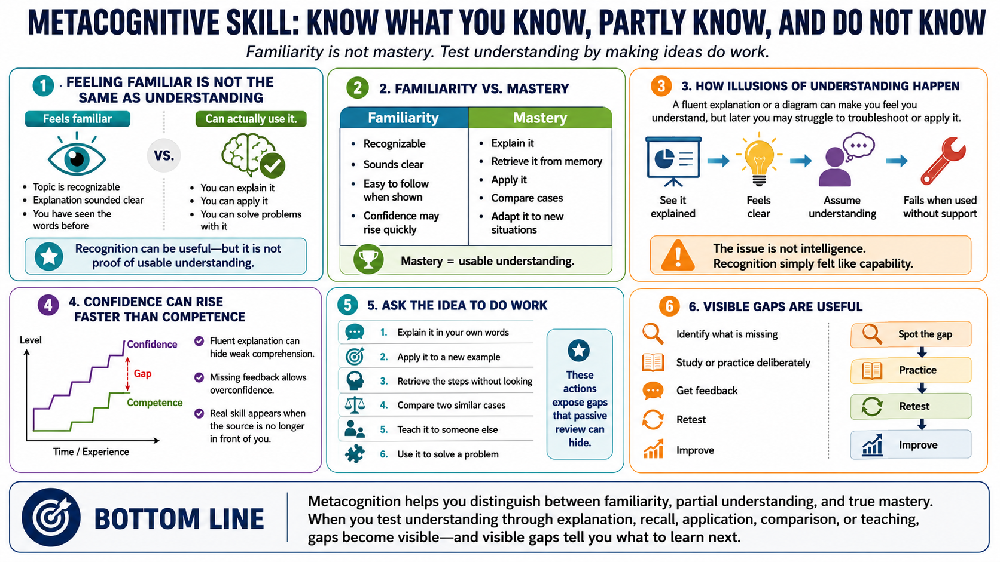

Knowing What You Know
Connecting to LMS... Progress: in progress

Narration
A core metacognitive skill is knowing what you know, what you partly know, and what you do not know yet. This sounds simple, but it is often difficult. People can feel confident because a topic is familiar, because the explanation sounded clear, or because they have seen the same words before. That feeling can be useful, but it is not proof of usable understanding.
Familiarity and mastery are different. Familiarity means something feels recognizable. Mastery means you can explain, retrieve, apply, compare, or adapt the idea when the source is not directly in front of you. A fluent explanation can hide weak comprehension if the person has not tested the idea through examples, application, or recall. Confidence can rise faster than competence when feedback is missing.
Illusions of understanding are common in learning and work. A person may believe they understand a system because they can follow a diagram while someone else explains it. Later, when asked to troubleshoot the system, they may discover that the relationships were never secure in memory. The issue is not intelligence. The issue is that recognition felt like capability.
To test understanding, ask the idea to do work. Explain it in your own words. Apply it to a new example. Retrieve the steps without looking. Compare two similar cases and explain the difference. Teach the idea to someone else. These tests make gaps visible, and visible gaps are useful because they tell you what to learn or practice next.